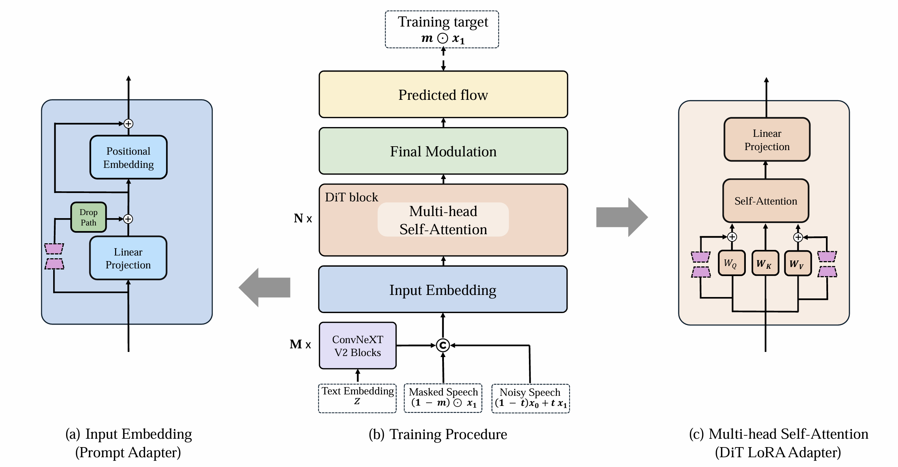

While substantial advances have been achieved in TTS for languages such as English and Mandarin, Korean remains comparatively underrepresented due to the lack of rigorous preprocessing methods, systematically constructed datasets, a shortage of standardized Korean TTS benchmarks, and explicitly optimized models for Korean.
To address these limitations, we propose a Korean-tailored data-refinement and coreset selection pipeline. It refines speech data and performs textual normalization especially for numerals and English terms, followed by a novel coreset selection strategy that leverages Jamo-based linguistic and phonological features unique to Korean.
As a result, we release CoreaSpeech, an efficient and robust Korean speech corpus comprising 700 hours across 21,449 speakers.
This refined core subset, evenly balanced across utterances ranging from 0 to 30 seconds, is derived from 2,058 hours of widely used Korean datasets.
Building on this, we conducted extensive experiments via cross-lingual fine-tuning with our CoreaSpeech dataset.
Furthermore, we introduce a new universal Korean TTS benchmark dataset including clean, noisy, and numeric subsets.
Additionally, we demonstrate that our Korean-specific text normalization serves as a plug-and-play module, reliably improving performance regardless of the underlying TTS architecture.
We publicly release our dataset, pipeline code, and evaluation benchmarks to support reproducible research and further advances in Korean and multilingual speech synthesis.
The CoreaSpeech Dataset
Overview
CoreaSpeech is an efficient and robust Korean speech corpus comprising 700 hours across 21,449 speakers.
This refined core subset, evenly balanced across utterances ranging from 0 to 30 seconds, is derived from
2,058 hours of widely used Korean datasets.
Dataset Statistics
Corpus
Hours
Samples
Speakers
Language
License
CoreaSpeech (Ours)
700
168,790
21,449
Korean
CC BY-NC 4.0
KSS
12
12,853
1
Korean
CC BY-NC-SA 4.0
Emilia (KO)
213
91,065
27,171
Korean
CC BY-NC 4.0
Duration Appending
Comparison of utterance duration distribution before and after data appending.
Semantic & Acoustic Diversity
Semantic PCA with frequency and projection (Raw, Core, Core-appended).
Acoustic PCA with frequency and projection (Raw, Core, Core-appended).
CoreaSpeech Pipeline
The CoreaSpeech pipeline is designed to construct a high-fidelity Korean speech corpus. The overview of the proposed
pipeline is shown below.
Overview of the CoreaSpeech data processing pipeline.
Key Stages
Data Conditioning:
Audio Diarization: Employs pyannote/speaker-diarization-3.1 to ensure single-speaker segments.
Text Categorizing (LNCat): Selectively retains utterances based on convertibility into Korean graphemes.
Text Normalization (N2gk+): Automatic normalization for numerals, English tokens, and special characters to natural Korean pronunciations.
Coreset Selection:
Jamo Bigram (Grapheme level): Considers pairwise Jamo adjacency to capture phonetic patterns and interactions. Uses probabilistic filtration for over-represented pairs.
Dynamic UTMOS threshold (Audio quality level): Refines sample selection based on audio quality, using dataset-specific dynamic thresholds.
Supplementary Finalization:
Data Appending for duration balancing: Concatenates short segments from the same speaker to create longer utterances, balancing sample durations up to 30 seconds.
Pipeline Stage Audio Examples
Audio Diarization Samples
Text
Audio Sample
Detected Speaker Count
Status
시간이 있을 때 낚시하러 자주가요.
1
✓ Selected
저 하라고요? 유리? 유리 유리 유리 유리. 아 하고싶어요. 자 하나 둘 셋, 배고픔!
2
✗ Filtered
저는 아 사실 그, 많은 애들은 제가 좋아하고. 네. 예. 최근들어서 노래방을 최근에 가본적이 좀 없기 때문에. 그쵸, 에, 네. 노래방 텐션업이라고 하니까 쫌 그렇긴 한데. 제가 일단 어 참을 수 없는 노래들이 좀 있죠.
5
✗ Filtered
Text Categorizing (LNCat) Samples
Korean Grapheme Identification
Text
Audio Sample
Note
Status
봄이야, 봄에는 게임이지. 우리 다같이 게임하자.
Korean Graphemes
✓ Selected
A further $100,000 fine was specifically for Mr. Howden for breaching directors duties.
Not Korean Graphemes (English)
✗ Filtered
오늘 영상에서 留后路 여지를 남기다 라는 표현이 나왔어요. 어떤 일을 할 때, 누구는 州安顺처럼 여지를 남기지 말아야 죽기살기로 하게 되어 성공할 수 있다고 합니다. 또 어떤 경우는 州安顺의 부인, 印花의 말처럼 다 망해도 돌아갈 여지를 남겨두어야 한다고 하죠. 저는 후자의 입장이지만 무엇이 맞는 것인지 모르겠습니다. 아무튼 저는 州安顺이 조금 걱정되네요.
Contains Non-Korean Characters (Chinese)
✗ Filtered
English Token Convertibility
Text
Audio Sample
Note
Status
이게 또 어떻게 봐야 될지. 그리고 또, 최근에 트론들이 또 엄청 핫하잖아요, LCK 같은 경우에는.
Convertible English Token ('LCK')
✓ Selected
Texture Operator에 있는 Render를 같이 불러오도록 하겠습니다.
Non-Convertible English Token ('exture Operator', 'Render')
✗ Filtered
Dynamic UTMOS-based Audio Quality Filtering
Text
Audio Sample
UTMOS Score
Status
아프리카의 밝고 따뜻한 분위기가 좋았어요.
4.21
✓ Selected
나에게는 다 소용이 없다.
1.35
✗ Filtered
Model: PEFT-TTS
To evaluate the CoreaSpeech dataset, we utilize F5-TTS as the base model and apply Parameter-Efficient
Fine-Tuning (PEFT) to create PEFT-TTS, a model optimized for Korean speech synthesis.

Overview of the PEFT-TTS model architecture.
PEFT-TTS applies cross-lingual PEFT to the F5-TTS model. Full fine-tuning is applied to text embedding
and ConvNeXt V2 modules. LoRA adapters are used for remaining modules, specialized for the CoreaSpeech
dataset. Key components include:
Prompt Adapter: LoRA (rank=64) is applied to the linear projection layer, fine-tuned with DropPath.
DiT LoRA Adapter: LoRA (rank=16) is applied to the self-attention layer of the DiT block.
Korean Universal Testset Samples
This section presents synthesized speech samples from our PEFT-TTS model (trained on CoreaSpeech), available for comparison with Ground Truth (GT) and other baseline models. The audio samples were generated using the Korean Universal Testset, covering Clean, Noisy, and Numeric conditions.
Clean Data Samples
Audio Prompt
Text Prompt
GT
PEFT-TTS (Ours)
XTTS
CosyVoice2
Llasa
Zonos
폭풍우, 뇌우, 강풍과 집중 호우를 동반하는 악기상이 발생한다.
미국 진보 진영은 앞으로 더 큰 대법원발 쇼크가 다가올까 숨죽이고 있다.
지나친 자치분권으로 행여 국가경쟁력이 떨어지지는 않을까 하는 걱정이라고 했다.
이후 중동 지역은 물론이고 유럽과 서아시아 등에서 잔혹한 테러가 끊이질 않았다.
작은 실수라도 대형사고로 이어질 수 있는 위험한 작업이기 때문에 아무나 할 수 없다.
이번 달에 신용 카드로 전화 요금을 냈는데, 결국 갑한테 빌려서 을한테 갚는 격이죠.
언젠가 어느 편인지 선택을 강요당하는 간어미중의 시간이 올 수도 있다.
그 사람은 차량 도난을 방지하기 위해 새로 산 자동차에 경보기를 부착했다.
시사 문제에 대해 논리적으로 생각을 정리하는 습관을 들여 논술 시험에서 좋은 점수를 받았다.
주택관리사도 취업난이라는데 소 소장은 적극적인 동문회 활동 덕분인지 금방 취업을 했다.
Noisy Data Samples
Audio Prompt
Text Prompt
GT
PEFT-TTS (Ours)
XTTS
CosyVoice2
Llasa
Zonos
지금 그렇게 대신 전 대통령 보다는 조금 더 나은 정책을 펼치지 않을까. 그렇게 파면당한 걸 봤으니까 그것보다 좀 잘하지 않을까 싶은 생각에.
좀 대한민국을 위한 사람이 나왔으면 좋겠고. 저는 살짝 윤석열 대통령
뭔가 길거리에 쓰레기가 많다보니까, 길거리에 뭐 쓰레기 같은 거.
좋은 부분은 치안이나 이런 부분들이 그래도 잘 되어 있고. 국민적인 정서 자체가 일단 정을 중요하게 생각하다 보니까.
청소년 범죄를 최대한 막고, 그런 일이 일어나지 않도록 잘 법으로 엄격하게 처벌해야 된다고.
일단은 치안이 아무래도 다른 외국에 비해서 가장 내세울 수 있는 것 같고, 좀 안 좋은 점이라고 하면 아무래도 반도 다 보니까 성장이 좀 더딘 점? 뻗어 나가기 쉽지 않은 점?
그게 젠더가 됐던 세대가 됐던 벌 차이가 없을텐데 너무 이렇게 남녀 더 나이 많고 노소 이렇게 나눠 놓은 게 그거는 진짜 좀 어떻게 바뀌어야 될 문제가 아닌가.
그때 예능 틀어져 있었는데 자막으로 비상계엄령 선포라고 해서 엄마가 설거지하고 계셨는데 집에 엄마가 있었거든요. 엄마한테 엄마가 비상계엄령이라는데? 하니까 엄마가 설거지하다가 뭐라는거야, 말이 되는 소리를 해. 이래가지고.
일단 저희가 뽑은 것도 있으니까 더 나쁘게 말하지는 못하겠는데, 그래도 갑자기 국가적으로 혼란을 주신 것도 있고 정치를 조금 제대로 못한 것도 없지 않나 있어서 더이상 높게 쳐다드릴 수는 없을 것 같아요.
앞으로는 더 올바른 삶을 살아야지 않을까.
Numeric Data Samples
Audio Prompt
Text Prompt
GT
PEFT-TTS (Ours)
XTTS
CosyVoice2
Llasa
Zonos
올해 신입생의 경우 입학금 인하분 13.4%와 국가장학금 지원액 3%를 합하면 지난해 신입생보다 입학금 부담이 46.4% 줄어듭니다.
이는 하한의 경우 올해 최저임금 8천 590원보다 0.3% 높은 수준이고 상한은 6.1% 높은 수준입니다.
현재 제주공항에는 10여 대의 제설 장비가 있는 것으로 알려졌는데, 13cm의 폭설로 42시간이나 활주로를 닫아야 했던 2년 전과 비교해 장비 보강은 미비한 실정입니다.
정부가 2050 탄소중립 목표달성을 위해 2030년까지 온실가스 배출량을 2018년 대비 40% 감축하는 안을 제시했습니다.
A씨는 지난 2018년 12월 대마와 엑스터시 등을 구매하려고 네 차례에 걸쳐 판매책에게 8만 원에서 50여만 원을 각각 송금한 혐의로 재판에 넘겨졌습니다.
지자체가 6,577억 원으로 가장 많았고 공기업 4,635억 원, 준정부기관 2,115억 원 순이었습니다.
이날은 검찰이 국가정보원으로부터 36억 5천만 원의 특수활동비를 상납받았다며 박 전 대통령을 뇌물수수와 국고손실 혐의로 추가 기소한 날입니다.
26,000여 명의 회원이 참여한 설문조사도 발표했는데 정부가 관련 정책을 추진한다면 `전면적인 투쟁 선언과 전국적 집단행동`으로 대응해야 한다는 응답이 42.6%에 달했습니다.
또 강선이 들어가는 상부 판의 두께가 30cm로 얇아 철근을 보강하는 데 어려움이 있었습니다.
Ablation Study
Explore how each component of the CoreaSpeech data pipeline influences the final speech synthesis quality. The image below summarizes the performance metrics. You'll find brief descriptions for each step, followed by a table with audio samples for you to listen to.
Performance Comparison across Pipeline Components
Step Descriptions
Base: Raw data without any preprocessing or coreset selection.
Base-diar.: Applied speaker diarization to the base data.
Norm: Applied N2gk+ text normalization to Base-diar.
Normstatic: Applied static UTMOS filtering to Norm.
Norm-app: Applied data appending to Norm (without static UTMOS).
Core-app: Applied Jamo-based coreset selection and data appending to Norm.
Core-appstatic: Applied static UTMOS filtering to Core-app.
CoreaSpeech: All pipeline components applied, including dynamic UTMOS.
Audio Samples from Ablation Pipeline
Listen to how the audio quality evolves at each step of our data refinement pipeline.
The following table presents audio samples for representative Clean, Noisy, and Numeric prompts, processed through each ablation stage.
Audio Prompt
Text Prompt
GT
Base
Base-diar.
Norm
Normstatic
Norm-app
Core-app
Core-appstatic
CoreaSpeech
저희 나라 경제 같은게 가장 좀 문제라고 생각해서 근데 그런 점에서 가장 힘내 주셨으면 하는 바램이 있습니다.
그게 젠더가 되었던 세대가 되었던 별 차이가 없을텐데 너무 이렇게 남 녀, 더 나이많고 노 소 이렇게 나누는 게 아 그거 진짜 좀 어떻게 바뀌어야 할 문제가 아닌가.
방금 전 꺼진 안방 조명을 최대로 작동합니다.
준비물은 줄넘기이며 편한 옷과 운동화를 착용해야 합니다
두 곳이 배우 주거지역 거주민들의 소비력을 간접적으로 볼 수 있는 집값은 매우 높이 뛰었다.
서울 에너지 공사는 어제 저녁 7시 반쯤 서울 노원구 하계동에 있는 600mm 열수송관이 파손됐다고 밝혔습니다.
CCTV 확인결과 방문한 남성은 3명으로 새벽부터 오전까지 남성들이 잇다라 방문해 초인종을 누르는 행위에 놀란 주민이 경찰에 신고했습니다.
정씨는 그제 31일 새벽 광주 북구 자신의 집에서 담뱃불을 이불에 비벼 끄다가 불을 내 4살과 2살짜리 두 아들과 15개월된 딸을 숨지게 한 혐의를 받고 있습니다.